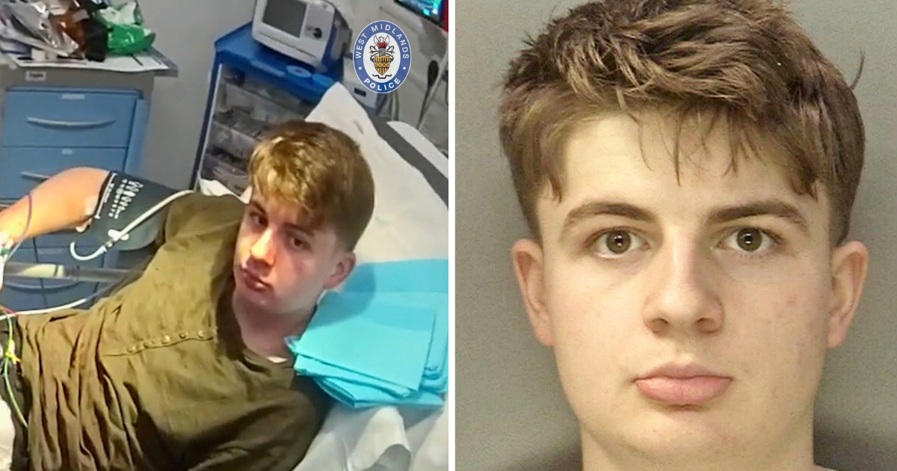

October 08, 2026
'Dexter' kill room: forensics student pleads guilty to murdering Maria Saceanu


"Bodycam stills via West Midlands Police; victim photo via SWNS, via the New York Post / The Tab"
A forensics undergraduate who built a plastic-lined "kill room" inspired by the TV series Dexter has pleaded guilty to the murder of a 24-year-old woman in the West Midlands.
The plea
Benjamin William Day, 20, changed his plea to guilty on Tuesday, October 6, 2026 — the second day of his murder trial at Wolverhampton Crown Court. He had been expected to claim self-defense, telling the court he set up the Airbnb room to film a "tribute" video to Dexter for TikTok.
Day will be sentenced on December 4. The court heard he had been studying an undergraduate degree in applied biology and forensics at the University of Worcester. He was 19 at the time of the killing.
The killing
On December 20, 2025, Day contacted Maria Saceanu — a 24-year-old Romanian woman — through a website, using a burner phone, and lured her to a room he had rented via Airbnb in Tividale, West Midlands, about 20 miles from his home in Redditch, Worcestershire.
Prosecutor Rachel Brand KC told jurors Day had spent hours preparing the room: plastic sheeting fixed with gaffer tape — exactly the way the show's protagonist prepares his "kill rooms." An apron, a plastic visor, gloves, a canvas roll of knives, and blood-stained microscope slides — apparently kept as trophies — were all found in the bedroom. He brought cleaning chemicals and bagged the victim's possessions for disposal.
Day stabbed Saceanu 78 times, many of the wounds inflicted after her death. Cuts to her hands, the court heard, were consistent with her trying to protect herself. He then began the "gruesome" task of dismembering her body — but cut his own hand, abandoned the attempt, and left the property.
The "wild dog" story
After walking a distance from the Airbnb, Day called 999 asking for medical help. Officers found him on the pavement with duct tape wrapped around his injured hand. Newly released police bodycam footage shows him — wearing a khaki shirt similar to the one worn by Dexter's lead character — calmly telling officers he had been attacked by a wild animal.
"Your story doesn't quite check out," one officer told him, as the tape on his hand drew suspicion. Day was taken to hospital, where bodycam showed him being arrested on suspicion of murder in a hospital room at 3:42 a.m.
It was another Airbnb resident, who noticed blood and contacted the landlord, who ultimately brought police to the scene.
The end of the trial
Jonathan Roe of the Crown Prosecution Service said Day had tried to blame Saceanu for her own death by claiming she attacked him first. "The evidence presented by the prosecution exposed those claims for the lies they were, and he has rightly been forced to accept responsibility for her murder," Roe said.
"Maria's family have been spared the trauma of a prolonged trial process as a result of today's guilty verdict. My thoughts remain with all those who loved and knew Maria."
Sources: The Times, the New York Post, The Tab, Crown Prosecution Service.
Source: The Times / New York Post — read the original report
← Back to latest stories